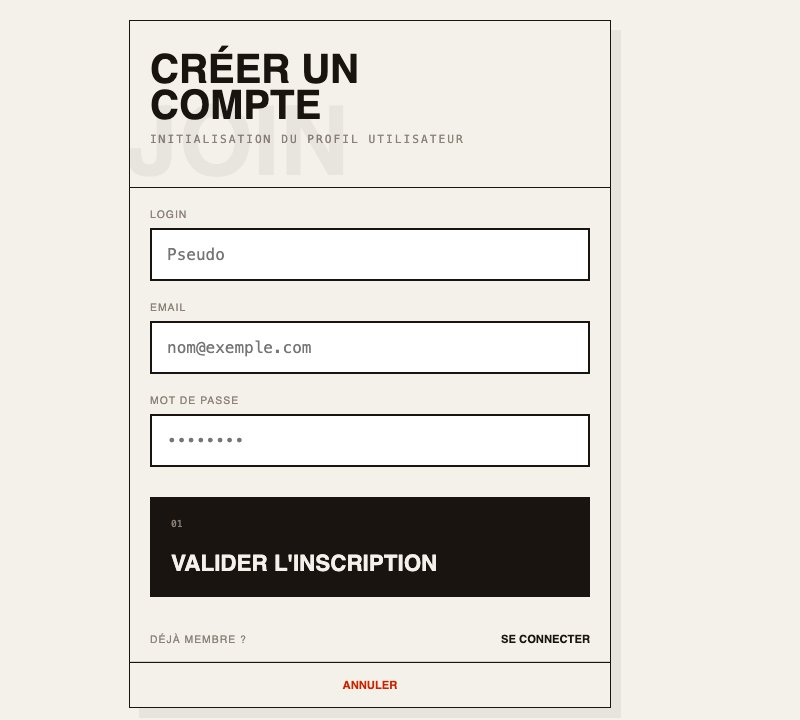
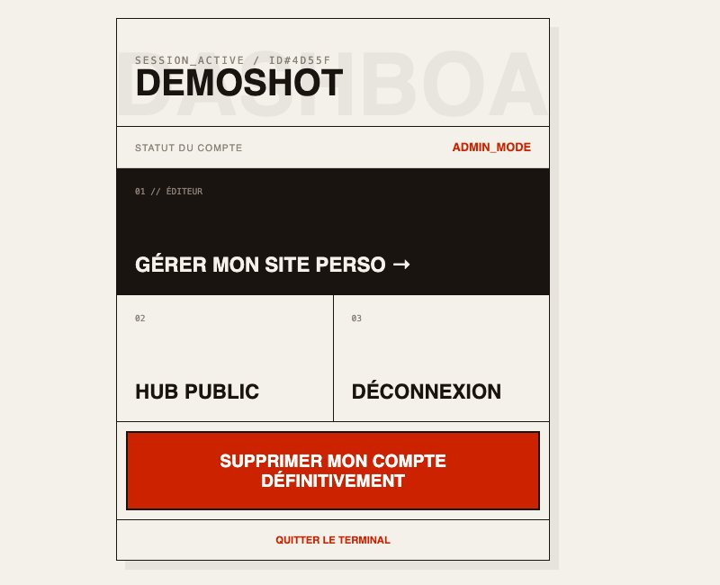
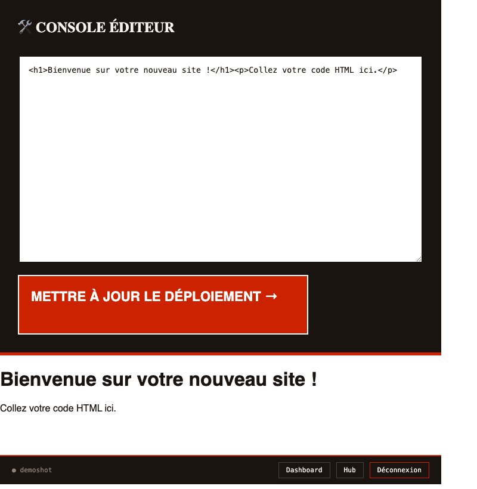

05 / 12PromoCards
Plateforme · PHP · SQLite
PromoCards est un système de gestion de comptes en PHP et SQLite : chaque visiteur peut s'inscrire, se connecter, et se voit générer automatiquement sa propre page personnelle, éditable directement depuis le site.
Les mots de passe sont hachés avec password_hash() et vérifiés avec password_verify(), les sessions PHP gèrent l'authentification, et chaque compte peut être supprimé avec ses fichiers associés. Un « hub » liste dynamiquement tous les sites créés en scannant le dossier du projet.
La partie la plus délicate a été l'éditeur de site intégré : chaque utilisateur colle son propre code HTML, affiché en aperçu direct sur sa page. Ce code passe par des filtres de sécurité qui neutralisent les liens vers les pages sensibles du site (suppression de compte, connexion, etc.) et bloquent les scripts dangereux (accès au cookie, requêtes réseau, redirections, stockage local) avant l'affichage — pour éviter qu'un utilisateur ne puisse piéger un autre visiteur.
Ce projet m'a fait travailler la sécurité web concrètement : gestion des sessions, hachage des mots de passe, et surtout l'assainissement de contenu généré par l'utilisateur avant de l'afficher — un problème qu'on ne mesure vraiment qu'en l'implémentant soi-même.

